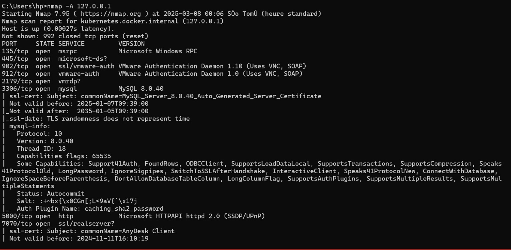

Scanner un réseau
avec Nmap
Analyse de ports · Détection OS · Contournement pare-feu · Scripts NSE
Membre du groupe
- Introduction
- Installation de Nmap
- Quelques options Nmap
- Scanner une adresse IP et contourner un pare-feu
- Détecter le système d'exploitation
- Identifier la version des services
- Scan de port spécifique
- Spoofing d'adresse MAC
- Analyse approfondie (-A)
- Scan furtif (-sS)
- Scan d'une plage réseau
- Scan des vulnérabilités
- Verbose (-V)
- Exporter les résultats
- Conclusion
Introduction
Nmap (Network Mapper) est un outil puissant utilisé pour analyser un réseau informatique et identifier les services actifs sur une machine. Ce guide explique de manière simple comment utiliser Nmap pour scanner des ports, contourner les pare-feux et obtenir des informations sur un système distant.
L'objectif est d'aider les administrateurs réseau et les débutants en cybersécurité à mieux comprendre l'utilisation de Nmap pour évaluer la sécurité d'un réseau.
Installation de Nmap
L'installation de Nmap est simple :
- Windows : Téléchargez le programme depuis https://nmap.org et installez-le.
- Linux : Utilisez la commande suivante dans le terminal :
Une fois installé, vous pouvez vérifier la version de Nmap avec :
Quelques options Nmap
Lancer nmap est très simple : il suffit de l'exécuter directement dans l'invite de commande sous Windows, ou dans le terminal sur les systèmes d'exploitation Linux.


En entrant simplement nmap, vous obtiendrez une liste des options disponibles pour cette commande. Vous pouvez également consulter la documentation complète des commandes de nmap sur leur site officiel : https://nmap.org/book/man.html
Scanner une adresse IP et contourner un pare-feu
Commençons par une commande simple : utiliser nmap suivi d'une adresse IP. Par exemple, scannons votre propre adresse IP. Cela correspond à un scan ciblé sur une seule adresse.
Nous pourrions également décider de scanner une plage complète d'adresses IP, comme dans cet exemple :
Pour illustrer le comportement de ces commandes, j'ai utilisé deux machines :
- Une machine virtuelle Kali, qui servira de machine distante tentant d'accéder à la machine cible.
- Une machine réelle sous Windows, qui sera la cible du scan.

Depuis ma machine distante, j'ai tenté de scanner mon adresse IP, mais je n'ai reçu aucun résultat. Cela s'explique par le fait que mon adresse IP est protégée par un pare-feu. Si le pare-feu bloque mes requêtes, une solution consiste à ajouter l'option -Pn à la commande nmap. Cela permet de contourner le pare-feu et d'effectuer le filtrage des ports.

Nous constatons maintenant que nous avons accès aux ports ouverts ainsi qu'aux services associés. Avec ces informations, il est déjà possible d'agir et d'exploiter ces données pour des analyses ou des actions spécifiques.
Essayons maintenant depuis ma machine réelle :

En exécutant la commande depuis mon système Windows, auquel appartient l'adresse IP, je n'ai rencontré aucun problème avec le pare-feu. Ce dernier considère cette action comme une opération de routine de sécurité, visant à surveiller les ports ouverts. De plus, le fait que la commande ait été lancée depuis ma propre machine explique cette absence de blocage.
Bien sûr, il est possible d'obtenir davantage d'informations en ajoutant des options spécifiques. C'est ce que nous allons explorer ici.
Détecter le système d'exploitation
La commande nmap -O permet de déterminer le système d'exploitation (OS) sur lequel tourne la machine cible. Il est important de noter que nmap envoie des dizaines, voire des milliers de requêtes à la cible, ce qui peut allonger considérablement le temps nécessaire pour effectuer l'analyse.

Ports ouverts détectés :
Voici une liste des ports ouverts, chacun étant associé à un service spécifique :
- 135/tcp (msrpc) : Utilisé pour Microsoft RPC (Remote Procedure Call). Ce port est utilisé par le service RPC de Windows, qui permet à des programmes de communiquer entre eux sur différents ordinateurs d'un réseau.
- 139/tcp (netbios-ssn) : Associé à NetBIOS, utilisé pour le partage de fichiers dans les réseaux Windows. Ce port est utilisé pour les services NetBIOS Session, notamment pour le partage de fichiers et d'imprimantes.
- 445/tcp (microsoft-ds) : Port SMB pour le partage de fichiers sous Windows.
- 902/tcp et 912/tcp : Probablement liés à des services ou logiciels spécifiques exécutés sur l'hôte.
- 2179/tcp (vmrdp) : VMware Remote Desktop Protocol.
- 3306/tcp (mysql) : Indique une base de données MySQL accessible sur ce port. L'annotation "(unauthorized)" suggère qu'il est accessible sans autorisation, ce qui peut poser un risque de sécurité.
- 5000/tcp (upnp) : Service UPnP, souvent utilisé pour la découverte automatique de périphériques.
- 7070/tcp (realserver) : Utilisé pour RTSP (Real-Time Streaming Protocol).
On remarque donc que des ports ouverts sont associés à différents services. Si vous le souhaitez, vous pouvez approfondir en recherchant à quoi ces services sont destinés. Cependant, ce qui nous intéresse ici est le suivant...

Cette ligne montre que l'on n'a pas pu déterminer avec exactitude le système d'exploitation trouvé. Ce n'est pas très grave. Ce qui va nous intéresser maintenant se trouve dans le TCP/IP Fingerprint.

Dans le résultat, il est indiqué que le système d'exploitation de la machine est Windows, mais la version exacte n'a pas pu être déterminée. Toutefois, cette information peut déjà être suffisante dans le cadre d'une analyse. Par exemple en sachant qu'il s'agit de Windows, vous pouvez utiliser des scripts spécifiques du moteur NSE pour aller plus loin dans l'analyse, comme la détection de failles SMB.
Identifier la version des services
Cette fois-ci, nous utilisons la commande suivante :
- -sV Cette option active la détection des versions des services. Le 's' indique un scan des services actifs, tandis que le 'V' permet de déterminer les versions exactes des logiciels associés aux ports ouverts.
- Objectif : Cette commande permet d'identifier, pour chaque port ouvert, la version précise des services ou logiciels en cours d'exécution sur l'hôte cible.

Ici, la commande fournit des informations détaillées, notamment sur les ports ouverts, les services exécutés et les versions spécifiques de ces services. Si, sur le réseau, l'une de ces versions correspond à un logiciel connu pour avoir une vulnérabilité répertoriée, il serait alors possible de l'exploiter en utilisant un outil comme Metasploit, qui permet de lancer des exploits ciblés pour des failles identifiées. Cette étape est cruciale dans le cadre d'une analyse de sécurité ou d'un test d'intrusion.
Voici le résultat obtenu depuis ma machine Kali, en utilisant l'option permettant de contourner le pare-feu, une étape essentielle à ne pas négliger.

Scan de port spécifique
Il est également possible de cibler des ports spécifiques pour le scan. Par exemple, si vous souhaitez vérifier la présence d'un serveur web actif sur une machine, vous pouvez concentrer l'analyse sur le port 80. Cette méthode réduit le nombre de requêtes envoyées, ce qui accélère la réponse.
Remplacez [numéro_du_port] par le port à scanner (par exemple, 80) et [adresse_IP] par l'adresse cible. Cette approche est particulièrement utile pour analyser des services précis.

Dans ce cas, le résultat indique que le port 80 est fermé, ce qui signifie qu'aucun service n'écoute sur ce port à l'adresse IP ciblée.
Avantages de cette commande
- Réduction du nombre de requêtes : Vous limitez l'analyse à un seul port, ce qui évite de scanner des milliers de ports inutiles.
- Gain de temps : En ciblant directement le port qui vous intéresse, le scan est beaucoup plus rapide.
- Efficacité : Idéal lorsque vous recherchez la présence d'un service spécifique, comme un serveur web (port 80 pour HTTP).
Spoofing d'adresse MAC
Explication technique :
- --spoof-mac : Cette option permet de falsifier (spoof) une adresse MAC. Dans cet exemple, l'adresse MAC spécifiée est 7A:8D:C4:11:A1:57.
- Contexte : Dans certains réseaux locaux, des mécanismes de contrôle d'accès reposent sur le filtrage des adresses MAC. Seules les adresses MAC autorisées peuvent accéder au réseau, tandis que les autres sont bloquées.
Objectif de la commande : En falsifiant l'adresse MAC, l'utilisateur peut contourner ces restrictions et simuler une adresse MAC autorisée par le réseau cible. Cela permet à un appareil qui aurait été bloqué de potentiellement accéder au réseau si l'adresse MAC correspond à celles autorisées.

Dans notre exemple avec une adresse MAC quelconque, on remarque que l'adresse MAC spécifiée a été utilisée, bien qu'elle ne corresponde pas à un fabricant connu (selon la base de données d'adresses MAC).
Analyse approfondie (-A)
- -A : Active plusieurs fonctionnalités avancées de nmap en une seule commande, ce qui simplifie l'analyse approfondie. Elle combine :
- Détection des versions des services (-sV) : Identifie les versions précises des logiciels associés aux ports ouverts.
- Détection du système d'exploitation (-O) : Tente de déterminer le système d'exploitation de la cible.
- Traceroute : Analyse le chemin réseau emprunté pour atteindre la cible.
- Scripts NSE spécifiques : Exécute des scripts pour collecter davantage d'informations sur les services détectés.
Avantages : En utilisant -A, vous n'avez pas besoin de spécifier individuellement des options telles que -sV ou -O. Cette commande est idéale pour obtenir une vue globale et détaillée de la machine cible en une seule étape.


Avec l'option -A, toutes les informations sont regroupées en une seule commande : les ports ouverts, les services associés, leurs versions, ainsi que les logiciels en cours d'exécution. Bien que cette commande soit la plus recommandée pour obtenir une analyse complète, elle peut être relativement longue à exécuter en raison de la quantité de données collectées.
Scan furtif (-sS)
Pour effectuer un scan en mode "stealth" (furtif) :
La particularité du scan furtif (stealth scan) (-sS) par rapport à un scan simple (nmap sans option) réside dans la méthode utilisée pour détecter les ports ouverts et sa discrétion. Même si on obtient les mêmes résultats, la façon de procéder reste différente.
1. Méthode utilisée :
- Scan simple (par défaut) : nmap effectue un scan TCP Connect, ce qui signifie qu'il établit une connexion complète en utilisant le protocole TCP (handshake complet : SYN → SYN/ACK → ACK). Cette méthode est plus visible pour les pare-feu ou systèmes de détection d'intrusion (IDS).
- Scan furtif (-sS) : Il envoie uniquement un paquet SYN au port cible, puis attend une réponse. Si le port est ouvert, il reçoit un paquet SYN/ACK. Immédiatement après, il répond avec un RST au lieu de compléter la connexion. Ainsi, la connexion n'est jamais établie complètement.
2. Discrétion :
- Scan simple : Très facile à détecter et consigner sur la cible.
- Scan furtif (-sS) : Conçu pour échapper aux systèmes de détection d'intrusion, il laisse moins de traces.
3. Performance :
- Scan simple : Plus lent, car chaque port nécessite un handshake complet.
- Scan furtif (-sS) : Plus rapide, car il n'établit pas de connexions complètes.
Utilisation typique :
- Scan simple : Utile pour des environnements où la discrétion n'est pas une priorité.
- Scan furtif : Idéal pour des tests de sécurité où vous souhaitez minimiser la détection.
Scan d'une plage réseau
Pour scanner un réseau complet :

Dans ce contexte, le suffixe /24 représente une plage de 256 adresses IP, allant de 192.168.43.0 à 192.168.43.255.
On observe également la présence d'adresses MAC inconnues associées à différents appareils sur le réseau, ainsi que leurs ports ouverts. Ces informations peuvent être utiles pour identifier des périphériques non reconnus ou pour analyser les services actifs sur chaque appareil.
Scan des vulnérabilités
Si vous avez le script NSE de nmap, vous pouvez exécuter une analyse spécifique pour détecter les vulnérabilités :
- Cette option utilise les scripts de détection de vulnérabilités du moteur de scripts NSE (Nmap Scripting Engine).
- Les scripts inclus dans la catégorie "vuln" sont conçus pour détecter les vulnérabilités connues dans les services exécutés sur les ports ouverts de l'hôte cible.

- samba-vuln-cve-2012-1182 : Ce script vérifie une vulnérabilité critique dans Samba. Dans ce cas, il n'a pas pu établir une connexion SMB avec l'hôte.
- smb-vuln-ms10-054 : Ce script vérifie une vulnérabilité SMB liée à Microsoft (MS10-054). Résultat : Aucun problème détecté.
- smb-vuln-ms10-061 : Ce script vérifie une autre vulnérabilité SMB. Résultat : Échec de la connexion.
Les scripts ont tenté de détecter des failles connues dans les services SMB et Samba, mais les résultats montrent que les connexions n'ont pas pu être établies (ou que les services sont sécurisés).
Verbose (-V)
L'option -V permet d'activer un mode verbeux (verbose), offrant une visualisation en temps réel de la progression de la détection et du scan. Elle affiche des mises à jour détaillées à chaque étape, ce qui est utile pour surveiller l'état et les éventuelles interruptions pendant l'exécution de la commande.
Exporter les résultats
Dans les options de commande de nmap, la section OUTPUT permet d'enregistrer les résultats du scan dans différents formats, tels que des fichiers texte (.txt) ou XML (.xml), facilitant ainsi l'analyse ultérieure.
Options disponibles :
- -oN <file> : Enregistre la sortie dans un format normal, lisible pour l'utilisateur.
- -oX <file> : Enregistre la sortie au format XML, utile pour les traitements automatisés ou l'importation dans d'autres outils.
- -oS <file> : Enregistre la sortie dans un format "script kiddie" (moins utilisé, principalement humoristique).
- -oG <file> : Enregistre la sortie dans un format "grepable", permettant une recherche rapide avec des outils comme grep.
Exemple de commande :
- -oN : La sortie sera enregistrée dans un fichier nommé issa.txt.
- 127.0.0.1 : L'adresse IP scannée, ici l'hôte local (localhost).

Ces options sont très utiles pour archiver les résultats, les partager ou les intégrer dans d'autres processus d'analyse.

Conclusion
Nmap est un outil essentiel pour identifier les services ouverts, analyser la sécurité d'un réseau et détecter d'éventuelles vulnérabilités. Son utilisation doit être responsable et conforme aux lois en vigueur, car scanner un réseau sans autorisation peut être illégal.
Grâce à ce guide, vous devriez être capable de réaliser vos propres analyses et mieux comprendre la sécurité réseau.